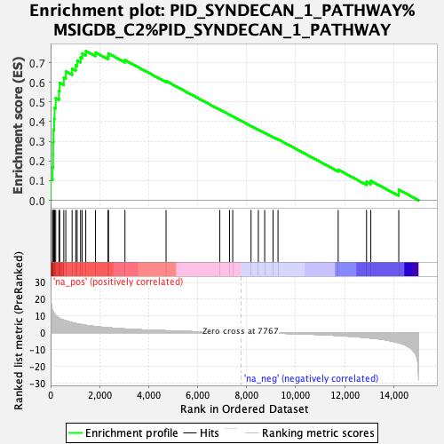
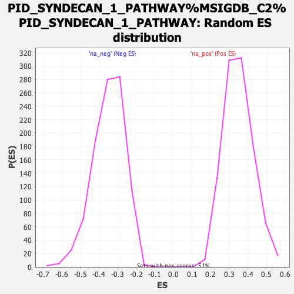

| Dataset | ranked_list |
| Phenotype | NoPhenotypeAvailable |
| Upregulated in class | na_pos |
| GeneSet | PID_SYNDECAN_1_PATHWAY%MSIGDB_C2%PID_SYNDECAN_1_PATHWAY |
| Enrichment Score (ES) | 0.75946087 |
| Normalized Enrichment Score (NES) | 2.1795228 |
| Nominal p-value | 0.0 |
| FDR q-value | 0.0 |
| FWER p-Value | 0.0 |

| SYMBOL | RANK IN GENE LIST | RANK METRIC SCORE | RUNNING ES | CORE ENRICHMENT | |
|---|---|---|---|---|---|
| 1 | COL14A1 | 7 | 20.910 | 0.1070 | Yes |
| 2 | COL1A1 | 83 | 12.881 | 0.1682 | Yes |
| 3 | COL16A1 | 100 | 12.524 | 0.2315 | Yes |
| 4 | COL1A2 | 102 | 12.515 | 0.2957 | Yes |
| 5 | COL3A1 | 116 | 12.257 | 0.3578 | Yes |
| 6 | COL5A2 | 146 | 11.459 | 0.4148 | Yes |
| 7 | COL9A2 | 164 | 11.003 | 0.4702 | Yes |
| 8 | COL8A1 | 208 | 10.228 | 0.5199 | Yes |
| 9 | COL12A1 | 341 | 8.702 | 0.5558 | Yes |
| 10 | COL4A5 | 370 | 8.463 | 0.5974 | Yes |
| 11 | COL6A1 | 538 | 7.472 | 0.6246 | Yes |
| 12 | CASK | 620 | 7.069 | 0.6556 | Yes |
| 13 | COL10A1 | 877 | 5.963 | 0.6691 | Yes |
| 14 | HGF | 1027 | 5.459 | 0.6872 | Yes |
| 15 | COL9A3 | 1083 | 5.291 | 0.7107 | Yes |
| 16 | COL4A6 | 1223 | 4.898 | 0.7266 | Yes |
| 17 | MMP7 | 1285 | 4.749 | 0.7470 | Yes |
| 18 | COL17A1 | 1435 | 4.367 | 0.7595 | Yes |
| 19 | COL4A1 | 1833 | 3.626 | 0.7516 | No |
| 20 | COL8A2 | 2344 | 2.925 | 0.7326 | No |
| 21 | COL11A2 | 2363 | 2.904 | 0.7463 | No |
| 22 | CCL5 | 3035 | 2.178 | 0.7127 | No |
| 23 | MMP9 | 4713 | 1.100 | 0.6065 | No |
| 24 | TGFB1 | 6907 | 0.198 | 0.4611 | No |
| 25 | MET | 7304 | 0.101 | 0.4352 | No |
| 26 | COL13A1 | 7434 | 0.070 | 0.4270 | No |
| 27 | PPIB | 8182 | -0.091 | 0.3776 | No |
| 28 | SDC1 | 8480 | -0.159 | 0.3586 | No |
| 29 | SDCBP | 8739 | -0.229 | 0.3425 | No |
| 30 | LAMA5 | 9081 | -0.336 | 0.3215 | No |
| 31 | MAPK1 | 9283 | -0.397 | 0.3101 | No |
| 32 | COL4A4 | 11739 | -1.748 | 0.1553 | No |
| 33 | HPSE | 12897 | -3.008 | 0.0935 | No |
| 34 | COL4A3 | 13071 | -3.232 | 0.0986 | No |
| 35 | MAPK3 | 14212 | -6.093 | 0.0538 | No |
